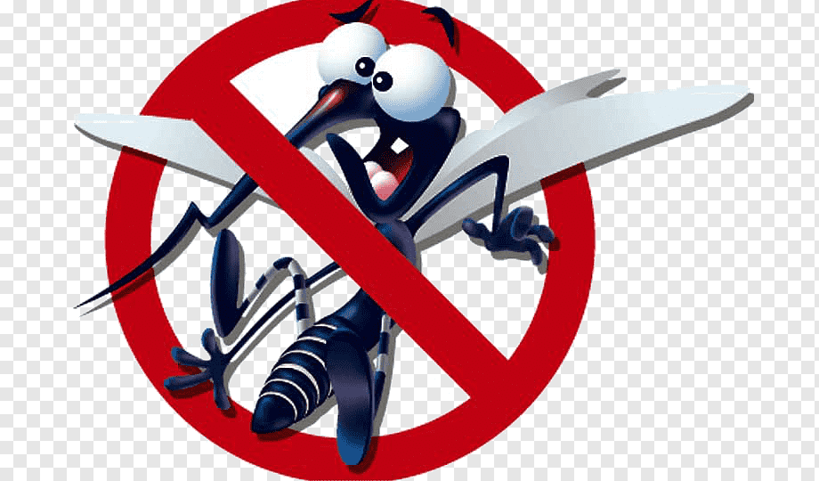

Esportes
Esportes olimpicos
Olimpíadas de 2024: Medalhas e Emoções em Paris Paris, cidade das luzes e do encanto, acolhe os melhores atletas do mundo para as Olimpíadas de 2024. Com competições acirradas e momentos emocionantes, as arenas estão repletas de histórias de superação e conquistas. Enquanto os recordes são quebrados e os corações são tocados, o espírito olímpico brilha mais uma vez.
Saude
A dengue é uma ameaça
Combata a Dengue: Proteja sua Família e sua Comunidade" A dengue é uma ameaça séria à saúde pública, transmitida por mosquitos infectados. Sintomas como febre alta, dores no corpo e erupções cutâneas podem indicar infecção. Para prevenir a propagação da doença, é essencial eliminar criadouros de mosquitos em casa, como recipientes de água parada. Além disso, medidas de controle de vetor, como uso de repelentes e telas em janelas, são fundamentais. Junte-se à luta contra a dengue, protegendo sua família e comunidade.
Educação
Educação Tecnológica

A educação tecnológica é fundamental para o desenvolvimento das crianças no mundo de hoje. Não apenas ensina habilidades práticas, como programação e uso de computadores, mas também promove o pensamento crítico e a resolução de problemas. É essencial para preparar os alunos para os desafios do futuro digital.
Lazer
Lazer, Cultura e Música:
O lazer, a cultura e a música se entrelaçam para criar experiências enriquecedoras e inspiradoras. Seja desfrutando de um concerto ao ar livre, explorando galerias de arte ou simplesmente relaxando com suas músicas favoritas, essas formas de expressão nos conectam com o mundo ao nosso redor e com nossas próprias emoções. Em um mundo movimentado, encontrar tempo para apreciar essas facetas da vida é essencial para nutrir nossa criatividade, bem-estar e conexão com os outros.